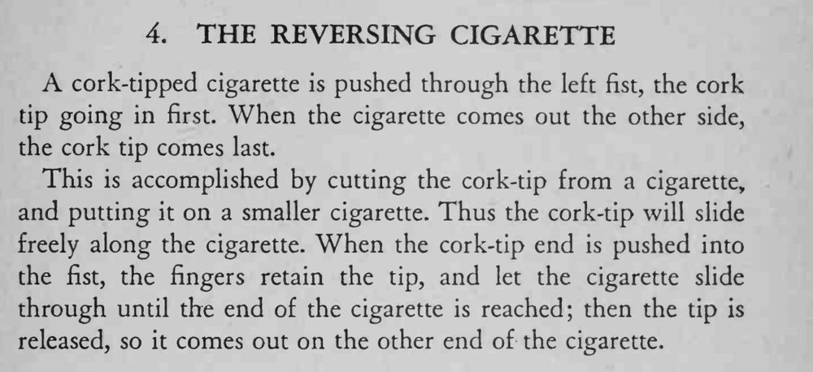

香烟从左拳穿进去，软木烟嘴先进；等它从另一边出来，烟嘴却跑到了后面。
两支香烟的粗细要配合得刚好，烟嘴滑动顺畅但不松脱。

cork-tipped cigarette is pushed through the left fist, the cork tip going in first. When the cigarette comes out the other side, the cork tip comes last. This is accomplished by cutting the cork-tip from a cigarette, and putting it on a smaller cigarette. Thus the cork-tip will slide freely along the cigarette. When the cork-tip end is pushed into the fist, the fingers retain the tip, and let the cigarette slide through until the end of the cigarette is reached; then the tip is released, so it comes out on the other end of the cigarette.